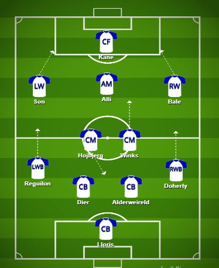

Wanna play Better ? Boost your confidence with Tactix
Center Back (CB)
Who is a Center Back?
Center backs are the heart of the defense. Their primary job is to stop opposing attackers and protect the goal.
Main Responsibilities
Mark strikers
Win aerial duels
Block shots
Intercept passes
Build play from the back
How to Play the Position?
Stay compact with your defensive partner, anticipate danger, and avoid diving into challenges unnecessarily. Good center backs read the game and position themselves before problems arise.
Key Attributes
Strength
Tackling
Positioning
Heading
Composure
Wing Back (LWB/RWB)
Who is a Wing Back?
Wing backs operate in systems with three center backs. They are expected to contribute heavily in both attack and defense.
Main Responsibilities
Provide width
Create chances with crosses
Defend wide areas
Support midfield
Press opponents
How to Play the Position ?
Constant movement is required. You must have the stamina to attack one moment and defend the next.
Key Attributes
Stamina
Speed
Crossing
Work Rate
Decision Making
Central Midfielder (CM)
What is a Central Midfielder?
Central midfielders connect defense and attack. They influence almost every phase of the game.
Main Responsibilities
Maintain possession
Support both attack and defense
Create passing options
Control tempo
Link different areas of the pitch
How to Play the Position ?
Keep scanning your surroundings, move into space, and make smart passing decisions. The best midfielders always know what to do before receiving the ball.
Key Attributes
Passing
Vision
Stamina
Ball Control
Awareness

AIUB
is also holding a football tournament goes by world cup 2026 try your luck! Form a team of 11 and win valuable prizes!